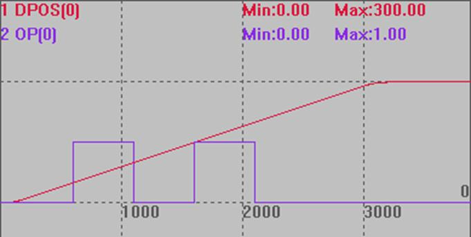

|
类型 |
轴状态 |
|
描述 |
HW_PSWITCH2指令实际已经比较的点数，HW_PSWITCH2(2)时清0。 |
|
语法 |
VAL= HW_PS2COUNTS (axisnum) axisnum：轴号 |
|
适用控制器 |
4系列170706以后固件版本支持 |
|
例子 |
以下例程测试环境：ZMC432，固件：20170711（仿真器无法运行此指令）。
RAPIDSTOP(2) WAIT IDLE(0)
BASE(0) ATYPE=1 UNITS=100 SPEED=100 ACCEL=500 DPOS=0 MPOS=0 OP(0,OFF) TABLE(0,50,100,150,200) '比较点坐标设置
HW_PSWITCH2(2) '停止并删除没有完成的比较点 HW_PSWITCH2(1, 0, 1, 0, 3,1) '比较4个点，操作输出口0 TRIGGER '触发示波器 MOVE(300) ?HW_PS2COUNTS '打印0，还没到比较点 WAIT IDLE(0) ?HW_PS2COUNTS '打印4，比较了4个点 END
 |
|
相关指令 |